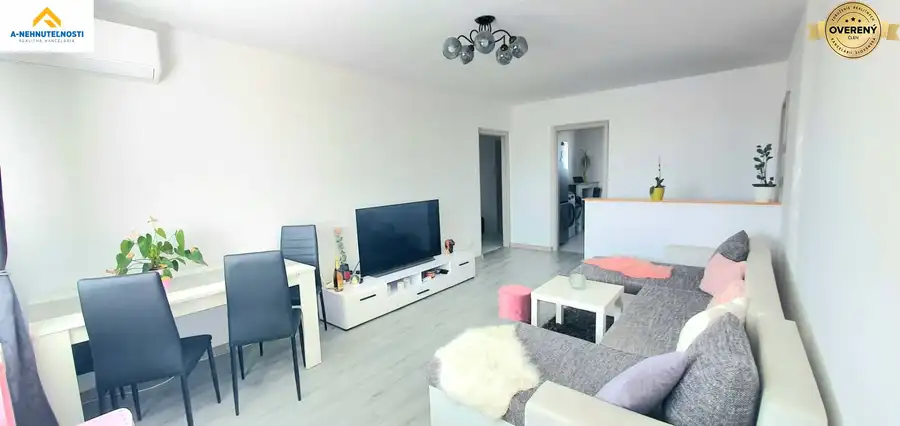
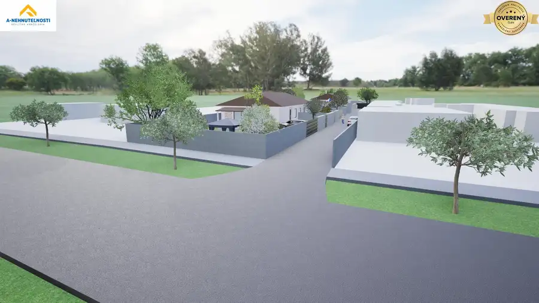
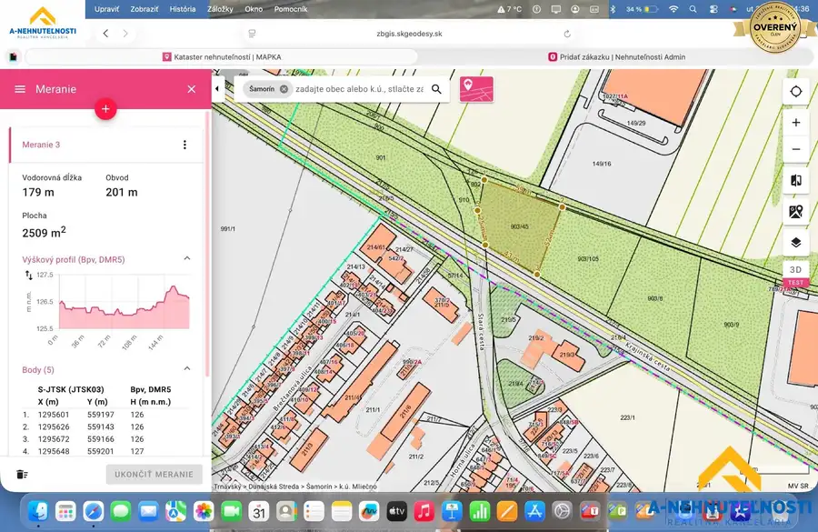

Výhľad, ktorý sa neokuká – 3-izbový byt | 71 m²| električka
Petržalka, Bratislava
- Dispozícia3-izbový
- Plocha71 m²
- Poschodie12. z 12
- Stavčiastočne prerobený
- Vlastníctvoosobné
O nehnuteľnosti
Realitná kancelária A-Nehnuteľnosti Vám exkluzívne prináša na predaj priestranný 3-izbový byt na Vígľašskej ulici v Bratislave – Petržalke.
Byt s úžitkovou plochou 71 m² sa nachádza na 12. poschodí panelového bytového domu a ponúka presne to, čo je pri mestskom bývaní čoraz cennejšie – priestor, praktickú dispozíciu, výbornú dostupnosť, občiansku vybavenosť a zároveň príjemný nadhľad nad mestom.
A navyše – električku máte prakticky pri dome a parkovanie pri bytovom dome je v súčasnosti bez poplatku.
DISPOZÍCIA, KTORÁ FUNGUJE
Byt ponúka príjemne rozdelený priestor pre rodinu, pár aj ako investičnú nehnuteľnosť.
Dispozične pozostáva z:
. vstupnej chodby,
. priestrannej obývacej izby,
. dvoch samostatných spální,
. samostatnej kuchyne,
. kúpeľne so sprchovacím kútom,
. samostatného WC,
. zasklenej lodžie, na ktorú sa vstupuje z kuchyne
Veľkou výhodou sú dve samostatné spálne, vďaka čomu byt ponúka dostatok súkromia aj pri rodinnom bývaní.
Bezpečnostné vstupné dvere, biele plastové okná a 12. poschodie vytvárajú príjemný základ pre komfortné bývanie.
REKONŠTRUKCIA, KTORÁ UŽ ŠETRÍ STAROSTI
Byt bol modernizovaný približne pred 6 rokmi.
V rámci rekonštrukcie bola vymenená:
. kuchynská linka,
. kúpeľňa,
. WC,
. podlahy,
. elektroinštalácia v byte,
. poistná skrinka.
Bytový dom zároveň prešiel viacerými praktickými úpravami.
Približne pred 2 rokmi bol vymenený výťah, vstup do domu je zabezpečený čipovým systémom a nové sú aj poštové schránky. K bytu patrí aj klasická latková pivnica, ktorá poskytne ďalší úložný priestor.
PARKOVANIE? VEĽKÁ VÝHODA
Jedným z príjemných benefitov tejto nehnuteľnosti je možnosť parkovania priamo pri bytovom dome, v súčasnosti bez poplatku. V Bratislave ide o vlastnosť, ktorá dokáže výrazne zvýšiť komfort každodenného života.
MESTO MÁTE NA DOSAH
Jedným z najsilnejších argumentov tejto adresy je dopravná dostupnosť. V blízkosti domu máte MHD a električkové spojenie, ktoré výrazne uľahčuje každodenné cestovanie do centra Bratislavy.
Petržalská električka č. 3 dnes tvorí priame spojenie Petržalky s centrom mesta a pokračuje až na Janíkov dvor. Samotná nová električková radiála má 3,9 km a priniesla 7 nových zastávok.
Z konca Petržalky sa do centra dostanete približne za 12–13 minút, pričom električka ponúka komfortné a predvídateľné spojenie bez nutnosti riešiť parkovanie v centre.
Pre ľudí, ktorí denne cestujú za prácou, školou či za službami, je to jeden z najväčších benefitov tejto lokality.
VŠETKO DÔLEŽITÉ MÁTE NA DOSAH
Ulica Vígľašská sa nachádza v etablovanej časti Petržalky s kompletnou občianskou vybavenosťou.
V okolí nájdete:
. Obchody a nákupy
. Lidl,
. Tesco,
. Billa
. OC Galéria Petržalka s množstvom obchodov a služieb,
. OC Danubia s ďalšou širokou ponukou obchodov a služieb.
. OC Galéria na Panónskej ceste ponúka okrem Tesca aj množstvo ďalších prevádzok, služieb, gastronómie, lekáreň či bankové služby. OC Danubia je ďalšou možnosťou na väčšie nákupy.
. lekárne,
. ambulancie a zdravotnícke služby,
. Nemocnica Antolská / Nemocnica sv. Cyrila a Metoda v dostupnej vzdialenosti.
Školy a škôlky
V širšom okolí sa nachádzajú materské školy aj základné školy, vrátane zariadení na Vyšehradskej a Turnianskej ulici. Lokalita je preto vhodná aj pre rodiny s deťmi.
Kaviarne, služby a každodenný život
V okolí nájdete menšie prevádzky, kaderníctva, kozmetické služby, potraviny, kaviarne a ďalšie služby. Pri Vígľašskej sa nachádza aj Dom kultúry Lúky, ktorý je prirodzenou súčasťou života tejto časti Petržalky.
Pošta
V rámci Petržalky je dostupných viacero pobočiek Slovenskej pošty, napríklad na Jasovskej, Vlasteneckom námestí či Furdekovej.
PETRŽALKA, KTORÁ NIE JE LEN O BETÓNE
Veľkou výhodou tejto lokality je množstvo možností na prechádzky, šport a aktívny oddych.
V okolí nájdete:
. zelené vnútrobloky,
. detské ihriská,
. športoviská,
. basketbalové ihriská,
. petang,
. cyklotrasy,
. možnosti na prechádzky a beh,
. blízkosť Veľkého Draždiaka,
. príjemné zelené plochy smerom k Chorvátskemu ramenu.
Pre rodiny s deťmi je atraktívna kombinácia ihrísk, zelene, škôl a dobrej dostupnosti MHD. Pre aktívnych ľudí zase cyklotrasy a možnosti športovania prakticky v rámci Petržalky.
Petržalská električková trať zároveň priniesla aj približne 6 km novej segregovanej cyklotrasy, ktorá zlepšila možnosti bezpečného pohybu na bicykli naprieč Petržalkou.
RÝCHLE SPOJENIE AJ AUTOM
Výhodou lokality je nielen MHD, ale aj rýchle napojenie na hlavnú dopravnú infraštruktúru Bratislavy.
Vďaka polohe v južnej časti Petržalky je pohodlne dostupná Panónska cesta a následne napojenie na D4/R7, čo ocenia najmä tí, ktorí pravidelne cestujú smerom na Rusovce, Jarovce, Čunovo, Podunajské Biskupice, Rovinku, Dunajskú Stredu či ďalej po R7.
NÍZKE MESAČNÉ NÁKLADY
Mesačné náklady predstavujú približne 210€ vrátane nákladov spojených so správou, vodou a elektrickou energiou.
V kombinácii so 71 m², tromi izbami a vlastnou pivnicou ide o veľmi zaujímavý pomer priestoru a mesačných nákladov.
Parametre
| Úžitková plocha | 71 m² |
|---|---|
| Poschodie | 12/posledné poschodie |
| Počet poschodí | 12 |
| Počet izieb | 3 |
| Vlastníctvo | osobné |
| Stav | čiastočne prerobený |
| Odvoz odpadu | áno |
| Internet | optika |
| Kúpeľňa | sprchovací kút |
| Vykurovanie | spoločné |
| Lódžia | áno - 1 |
| Pivnica | áno |
| Garáž | nie |
| Výťah | áno |
| Parkovanie | vonkajšie |
| Postavené z | panel |
| Zariadenie | čiastočne |
| Zateplený objekt | áno |
| Káblová televízia | áno |
| Okná | plastové |
| Dátum zverejnenia | 18. 9. 2026 |
Kde to je
Mohlo by Vás zaujímať

Byt10 206 990 €„Ráno káva, večer Dunaj. a všetko ostatné na dosah.“ Šamorín 3-izbový65.44 m²8. podlažie Realitná kancelária A-Nehnuteľnosti Vám exkluzívne ponúka na predaj 3-izbový byt v Šamoríne, ktorý zaujme výbornou polohou, praktickou dispozíciou a…
Pozemok10 360 500 €EXKLUZÍVNE | Stavebný pozemok s právoplatným stavebným povolením Blatná na Ostrove 2510 m² Ponúkame na predaj stavebný pozemok v obci Blatná na Ostrove s kompletnou projektovou dokumentáciou a právoplatným stavebným povolením na výstavbu 2…
Pozemok3 625 000 €Predaj komerčného pozemku, Šamorín Šamorín 2500 m² Realitná kancelária A-Nehnuteľnosti ponúka na predaj pozemok v okrajovej časti Šamorína. K dispozícii platné ÚPI a stavebné povolenie - elektrina.…